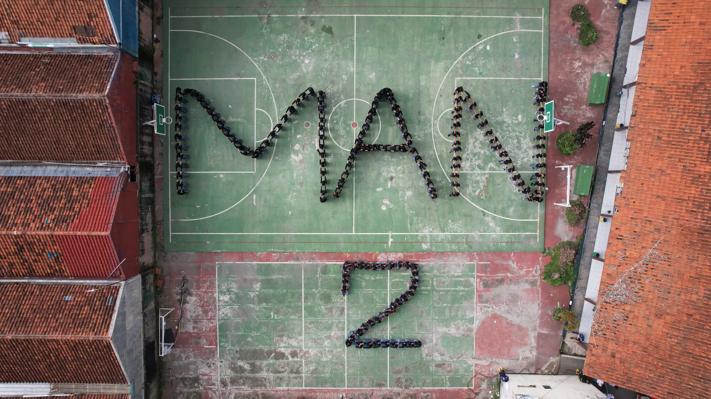
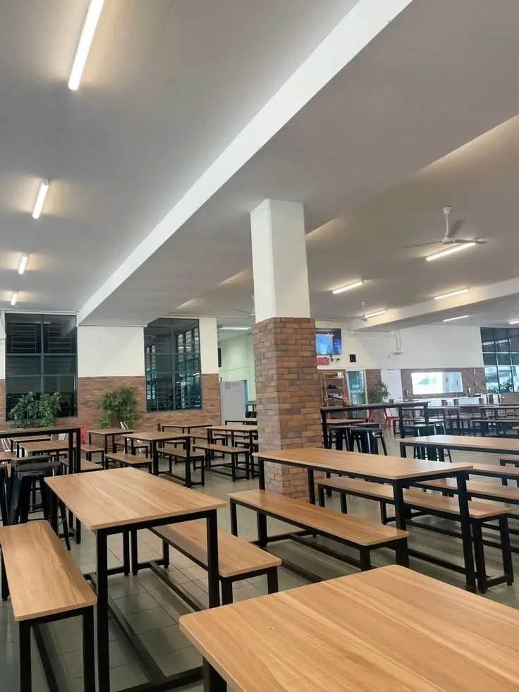
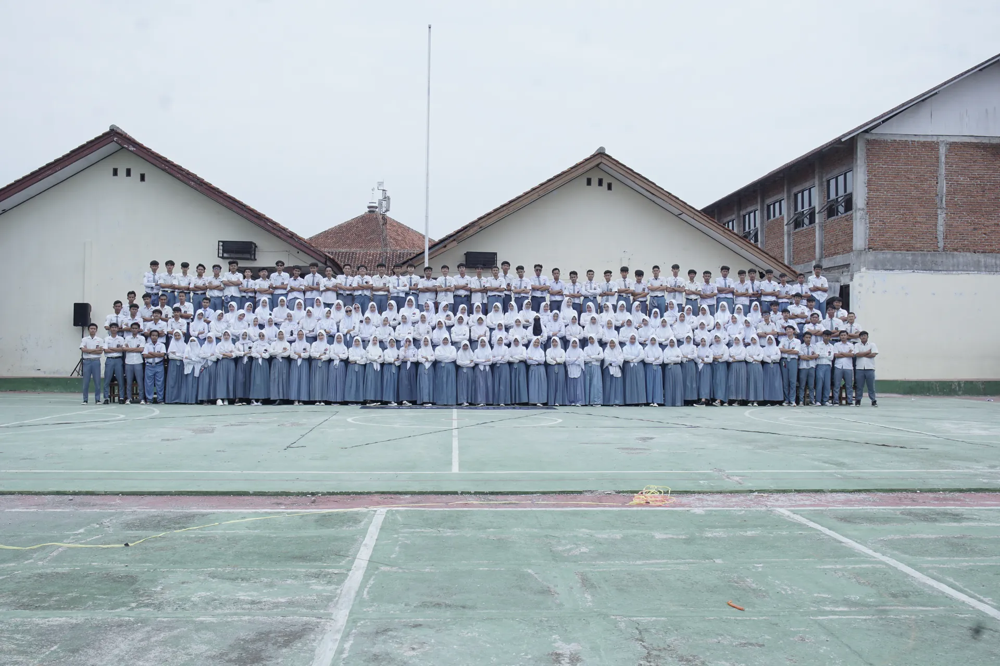

Tetap terhubung, berbagi pengalaman, dan terus berkontribusi untuk almamater serta generasi berikutnya.
Jejaring alumni menjadi penghubung antara lulusan, madrasah, dan adik-adik kelas dalam mengembangkan potensi bersama.
Bantu kami memperbarui data alumni dan bagikan pengalaman Anda. Hubungi tim madrasah melalui halaman kontak agar dapat terhubung dengan jejaring alumni.
Alumni MAN 2 Kota Tasikmalaya melanjutkan langkah di dunia pendidikan, teknologi, usaha, dan pelayanan publik.

Melanjutkan pendidikan tinggi dan mengabdikan diri sebagai guru, dosen, serta peneliti.

Berkarier di bidang teknologi, kesehatan, keuangan, dan industri kreatif.

Membangun usaha mandiri dan menciptakan lapangan kerja bagi masyarakat.

Berkontribusi sebagai aparatur, tenaga kesehatan, dan penggerak masyarakat.
Beberapa program yang dapat dimanfaatkan oleh para alumni madrasah.
Perbarui data kontak, pendidikan, dan karier agar tetap terhubung dengan informasi madrasah.
Berbagi peluang karier, beasiswa, dan pengalaman profesional antaralumni.
Dukung program beasiswa, mentoring, dan kegiatan pengembangan siswa.
Empat langkah sederhana untuk bergabung kembali dengan komunitas alumni.
Sampaikan minat bergabung melalui halaman kontak atau datang ke madrasah.
Lengkapi data angkatan, pendidikan, dan aktivitas saat ini.
Dipertemukan dengan jejaring alumni sesuai bidang dan minat.
Ikut serta dalam kegiatan, mentoring, dan program pengembangan siswa.